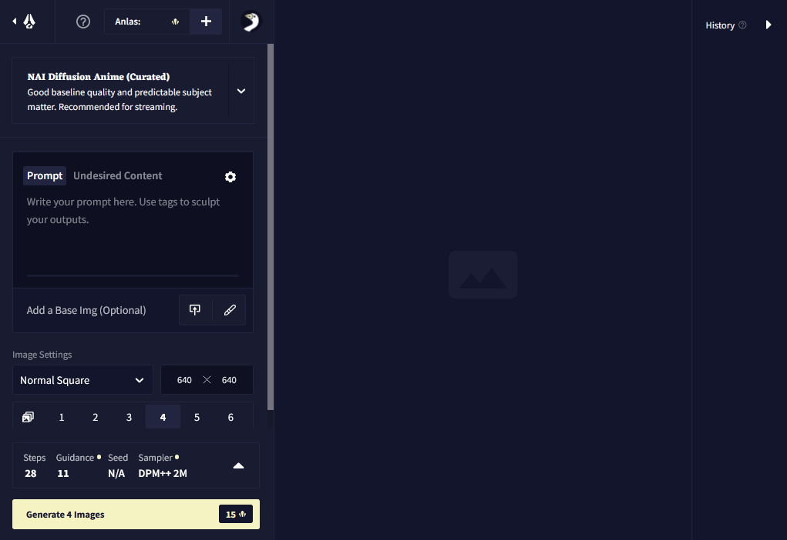
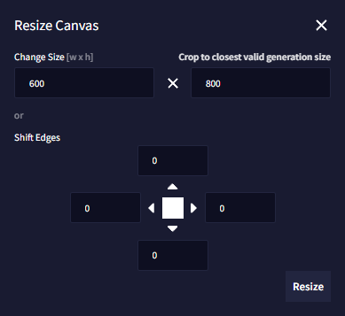
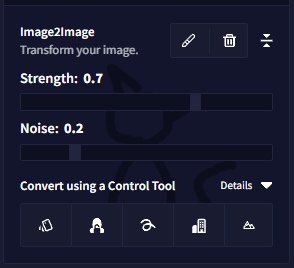

Paint New Image
Canvas / Paint New Image / Edit Image
Not only can you upload images, but you can also draw an image and subject for the AI to generate (or customize it, but let's cover creating one from scratch first!)

Click the Paint New Image button under your prompt bar. This opens our Canvas and removes the need for you to use external painting software (You always have the option to upload images created with external sources, though!).
There are a few handy tools that you can use while editing in the Canvas:
- Draw: The Pen Tool
- Erase: The Erase Tool
- Select: The Select Tool
- Color Picker: The Color Picker
- The Color Palette
- Pen Size
- Undo & Redo
- Download File
- Save & Close
- Cancel
- Zoom
- Layers
Draw
With Draw you can create your drawn guide for the AI directly on your
Canvas, on top of an uploaded image or previous image generation.
If you don't like the size of the Pen tool, you can adjust it with the Pen Size slider located on the right.

Erase
With Erase you can remove anything from your drawn guide.
If you don't like the size of the Erase tool you can adjust it with the Pen Size slider located on the right.
Select Tool 
Select allows you to freely draw a rectangle you can move around anywhere on your Canvas.

Color Picker
Pick a color from anywhere on your picture. This allows you to swiftly grab a color from any area of your image removing the need to guess the right value on the Color Palette.
Color Palette
Select a Color of your choice by clicking anywhere on the Color Palette.
Pen Size
Adjust the size of your Pen by editing the Pen Size slider or clicking the size number and entering a number value of your choice.
Resize Canvas
Adjust your Canvas size quickly by changing the Size values, or
use the Shift Edges fields to add or subtract pixels from chosen
directions.
The clickable Crop to closest valid generation size button atuomatically sets
the values to adjust the
base image's resolution to match the closest resolution that is supported to be output
by the AI.

小贴士： If your Image2Image generations look "stretched" compared to the base image, it probably means the original's resolution doesn't match the ones supported by the AI. Use the Crop to closest valid generation size button to fix that!
Undo & Redo
The Canvas records every modification to your Canvas image, so you can always Undo & Redo your changes if you wish to do so.
Download File
Export the current Canvas file. You can Download your newly drawn or edited Canvas at any time by using the Download File button. Keep in mind that Image Generation is session-based and all data is lost upon exiting or reloading, so backing up a Canvas file allows you to use your Canvas image as a file for the Upload Image option in the future.
Save & Close
Confirm all changes to the Canvas and return to the Image Generation menu. This will close the Canvas and let you choose between using the final drawing for Image2Image or Control Tool generation.

Cancel
Cancel all changes to the Canvas and return to the Image Generation menu. This will discard all changes made and return you to the Image Generation menu.
Zoom
You can Zoom in and out while editing with your mouse wheel.
Layers
The Canvas supports editing on multiple Layers. You can navigate Layers to make edits that do not affect the original image. Layers are merged upon Confirm.
How to generate based on an image drawn with the Canvas:
-
Play around with the Strength & Noise of your next generation: If you use large sections with only one color, you need to up the Noise setting accordingly to provide the AI with some working ground to come up with texture details.
-
Don't want to change much? Lowering both Strength and Noise sliders results in fewer changes to your original image. Now you can use Enhance or play around with the other settings!
小贴士： Alternatively, if you want to use the written prompt to add something that isn't in the initial doodle, a high Strength value makes it easier to happen. Like the "red dress" in the demo earlier in the page!
- Consider your text prompt: It is crucial you consider the text you write alongside the next generation. We've seen very good results if you accurately describe your image alongside what transformation you plan to give it.
If you want the AI to consider the text input more, then try to up the Prompt Guidance as well as the Strength sliders accordingly. Test different slider strengths at lower steps to get a good preview for what the AI is doing with your work and chosen settings - sometimes as little as 10~15 steps can give a good preview and sense for what you are attempting.